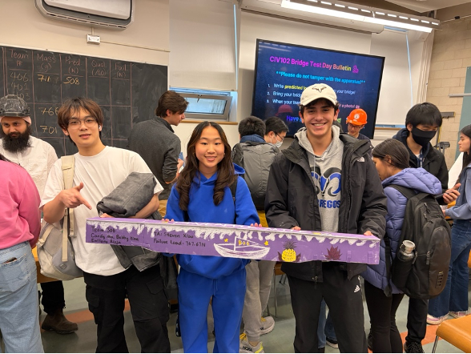
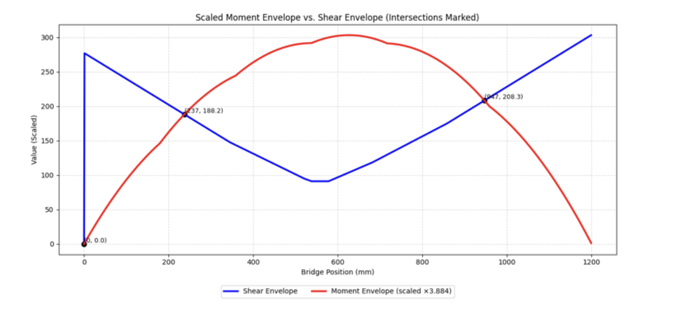
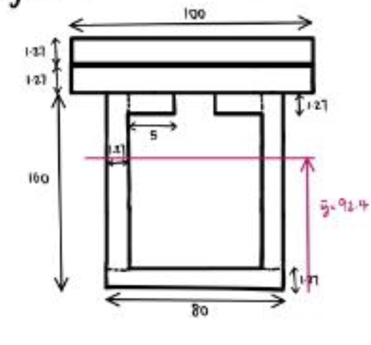
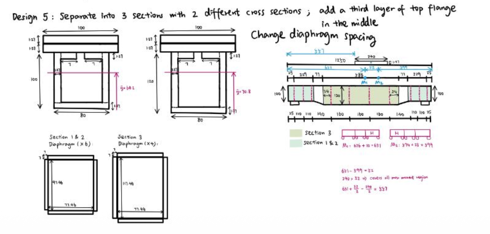
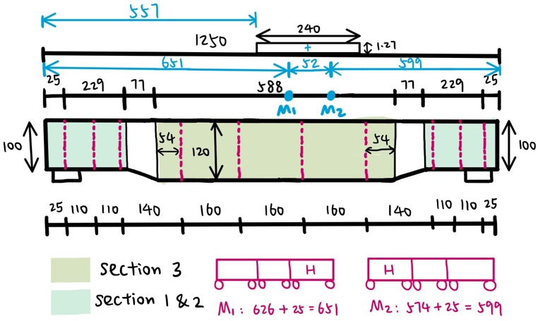
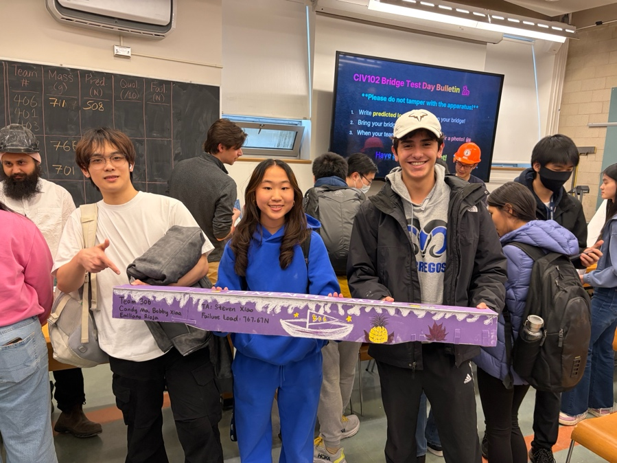
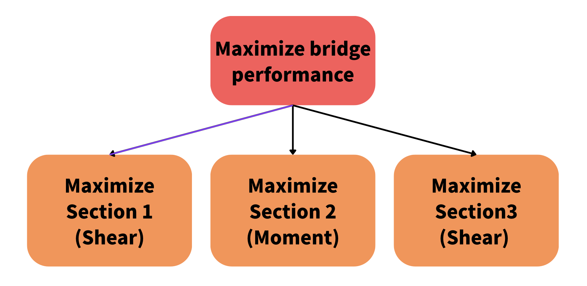
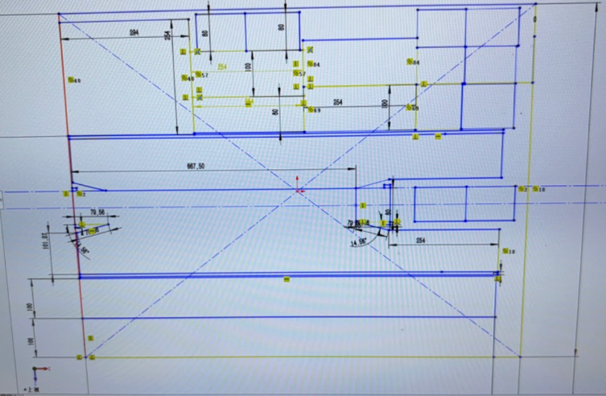

Design Project 02 · Winter 2026
CIV102 Bridge Project: Team 306
With Candy Ma and Emiliano Rioja Kuri Kassis

Team 306 at the CIV102 bridge showcase.
After Praxis I, I valued grounding design decisions in stakeholder reality. After CIV102, I extended that value to physical reality itself. A model that is not validated against what it claims to represent is speculative, regardless of how rigorous the mathematics are. I now approach every design with the question: what are we assuming, and when will we test it?
One-Page Summary
In teams of three, we designed and built a matboard box girder bridge spanning 1200mm to support a moving 400N train load, with the goal of maximizing failure load while accurately predicting it. The design was hard-constrained by a fixed material budget (826,008 mm² matboard) and a 200mm height limit.
Key framing decision: The assignment prescribed the objective — maximize failure load — but left the framing of how open. Our most important framing decision was decomposing a single cross-section optimization into a spatially differentiated structural problem. By computing the shear force and bending moment envelopes across all train positions in Python, we identified two boundary points (x₁ = 237mm, x₂ = 947mm) where the dominant load type switched. The bridge ends were shear-critical. The central span was moment-critical. A uniform cross-section would over-design for one load type at every section, wasting the fixed material budget. This reframing drove all subsequent design decisions.

Fig. 1. The graph of bending moment and shear force along the bridge. The moment is scaled up to the maximum shear. The intersections represent the division of three sections of the bridge, where x₁ = 237mm and x₂ = 947mm.
Design process: Starting from Design 0 (failure load: 240N), we iterated through 7 designs using a bottleneck-driven strategy: identify the minimum Factor of Safety failure mode, then target it with a specific geometric change.
- Designs 1–3: Addressed plate buckling and flexural compression by thickening flanges and increasing web height, reaching 920N.
- Design 5: Variable cross-section depth — shallower at ends, deeper in the middle — with a third top flange layer only in the central span. This satisfied both the material constraint and structural requirements simultaneously, yielding a failure load of 1161N.

Fig. 2. Screenshot of Design 3. Web height is 160mm.

Fig. 3. Screenshot of the engineering drawing of Design 5. Two cross-sections and the side-view are clearly shown in the top part of the figure. This is the sign of reframing the problem.
Final design and outcome: A pi-beam with variable depth across three sections, 9 diaphragms with tighter spacing at the ends, and a triple-layer top flange in the central span. Theoretical failure load: 1161N. Actual failure load: 400N.
The gap was caused by the connection section between structural zones. At 400N, the connection could no longer endure the moment and failed. This failure mode was invisible to the FOS model, which evaluated each cross-section in isolation. By the time the weakness became physically apparent, all material had been cut and no reinforcement was possible.

Fig. 4. Engineering drawing of the dimension of the bridge.

Fig. 5. Bridge before the testing.
Annotation
Key Framing Decision
The assignment framed the goal as maximizing failure load. We reframed it as three independent structural sub-problems. This reframing unlocked the variable-depth design that a uniform cross-section approach could never have reached within the material budget. The Python SFD/BMD analysis was the evidence that justified this reframing. Without it, a three-section bridge would have been a guess, not an argument.
No Proxy Test
Our team did not carry out any proxy testing before the final load test. Every design existed only as calculation until the bridge was physically loaded. The FOS model evaluated each cross-section in isolation and never modelled inter-section connections. The connection failure was invisible until construction, at which point all material had already been cut. No reinforcement was possible.
The gap between theoretical (1161N) and actual (400N) failure load was stark. This was not a modelling error within the FOS framework. It was a failure to identify connection behaviour as a testable hypothesis at all.
CTMFs Used
Evidence of Use
The top-level design claim was to maximize failure load within material constraints. By applying the Toulmin fractal, this claim decomposed into three spatially distinct sub-claims, each requiring its own data and warrant. The SFD/BMD intersection provided evidence that the bridge ends and the central span were structurally different problems. Each sub-claim then became its own independent design argument. The intersection plot identified x₁ = 237mm and x₂ = 947mm as natural structural boundaries, directly justifying the variable-depth design of Design 5.

Fig. 6. A figure to demonstrate Toulmin Fractals with the main claim shown in the red block and sub-claims shown in orange sections.
Assessment
The Toulmin fractal is most useful when a single claim contains hidden sub-problems with different dominant constraints. The risk is over-decomposition: more sub-claims introduce more boundaries that the argument must account for. Our splice between sections required an on-site fix because constructability at the boundary was never treated as its own sub-claim.
In future projects, constructability at structural boundaries should be added as an explicit nested claim before finalising any spatially decomposed design.
Evidence of Use
Rather than physically building each iteration, we used Python to compute all 8 failure mode FOS values per design, enabling rapid iteration through 7 designs before touching matboard. Design 4 was eliminated entirely by the model — calculated surface area exceeded the material constraint by approximately 13,000 mm². No material was wasted.
Assessment
Most valuable when the design space is large and physical prototyping is expensive. Its core limitation is the assumption of ideal conditions. The model could not predict glue joint imprecision or construction variability. Design 6 required an on-site I-beam addition as a direct consequence of this gap.
Use computational prototyping for bulk iteration, but schedule an explicit physical validation step before finalising. Do not treat construction as a separate phase.
Evidence of Use
SolidWorks was used to build a digital prototype of the matboard cutting layout before any physical cuts were made. By virtually assembling all cross-section components within the sheet dimensions, the team could verify material fit and optimise cut efficiency. The digital prototype caught dimensional conflicts before construction, preventing material waste from mis-cuts. It also served as the construction blueprint.

Fig. 7. CAD layout of the cutting plan.
Assessment
CAD prototyping occupies a middle ground between pure calculation and physical construction. It is more concrete than a mathematical model and can show directly whether a design can be constructed within constraints. Its limitation is that the digital prototype modelled ideal flat cuts but could not capture glue tab overlaps or construction sequencing problems.
Pair CAD prototyping with a small physical mock-up of the most complex joint to close the fidelity gap before full construction begins.
Evidence
No proxy testing was carried out before the final load test. Every design existed only as calculation until the bridge was physically loaded. The FOS model evaluated each cross-section in isolation and never modelled inter-section connection behaviour. This failure mode was invisible until construction.
Assessment
The gap between theoretical (1161N) and actual (400N) failure load was not a modelling error within the FOS framework. It was a failure to identify connection behaviour as a testable hypothesis at all. Proxy testing forces a team to ask: what does this model not capture?
In any project where multiple components join, connection behaviour should be treated as a testable hypothesis rather than an assumed consequence of cross-section calculations.